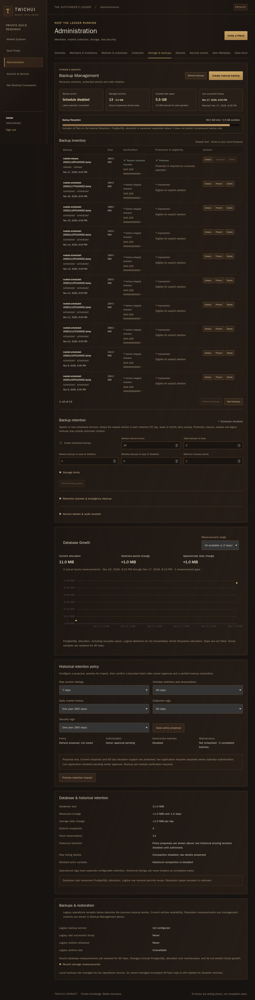
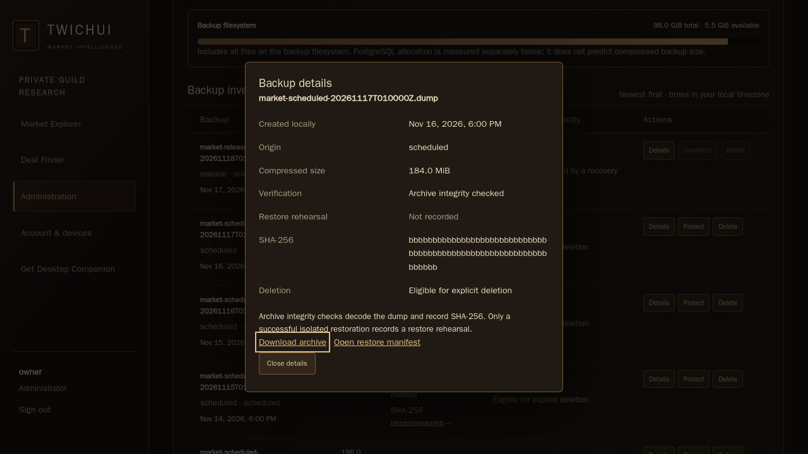
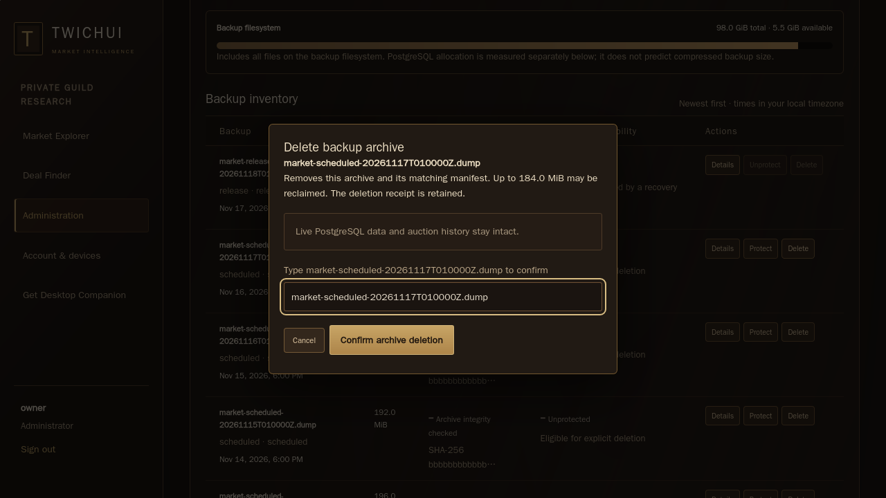
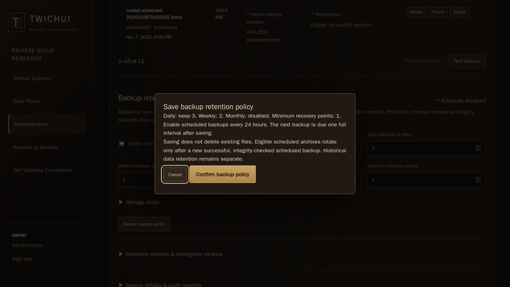
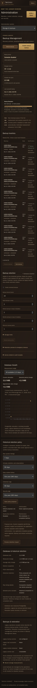
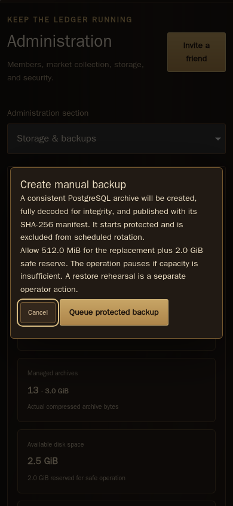
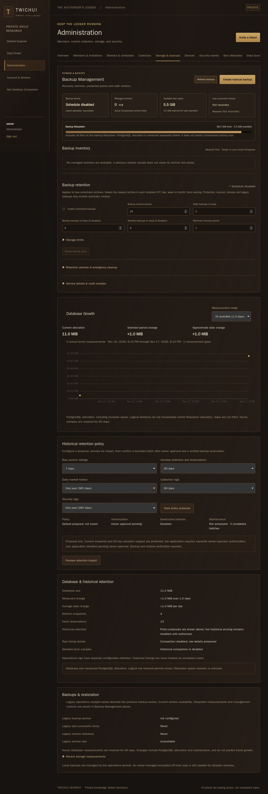
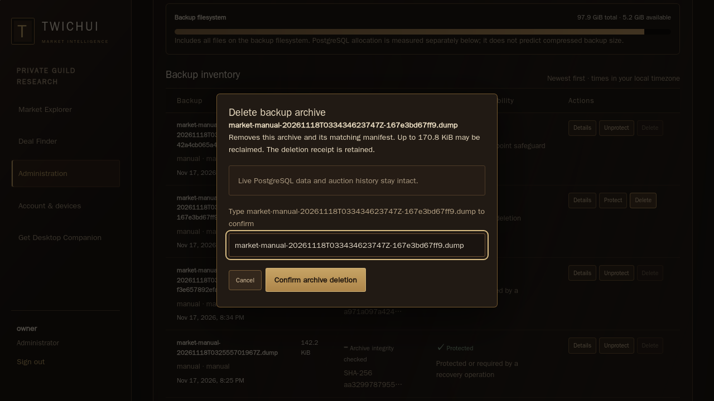

Owner review candidate · draft PR #33 · no production promotion
These WebKit captures use isolated synthetic market_test data in America/Denver time. Counts, tier examples and release labels are review fixtures. The actual-service deletion capture uses real disposable PostgreSQL archives through the new API boundary. Production remains disabled with zero database dump archives. Click any capture for its full resolution.








Acceptance, current inventory, policy behavior, deployment steps and rollback are recorded in the review report and operations plan. Screenshot hashes are in screenshots.json.